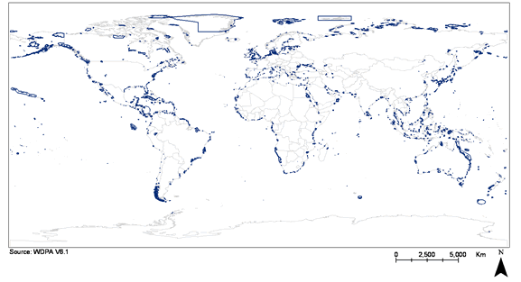

Trophic levels (TL) express where fish and other organisms tend to operate in their respective food webs. Unlike, e.g., counts of gill-rakers, TL are not attributes of the fish whose feeding is being described, but of their interactions with other organisms. Thus, to estimate the TL of fish or invertebrates, we must consider both their diet composition, and the TL of their food item(s). The TL of a given group of animals (individuals, population, species) is then estimated from:
TL = 1 + mean TL of the food items
where the mean is weighted by the contribution of the different food items.
Following a
convention established in the 1960s by the International Biological Program,
primary producers and detritus (including associated bacteria) a definitional
TL of 1.
Thus, for
example, an anchovy whose diet would consist of 50% phytoplankton (TL = 1) and
50% herbivorous zooplankton (TL = 2) would have a TL of 2.5. The last
value is an estimated, fractional TL, differing conceptually and numerically
from the integer values that are often assumed for higher TL, and which are too
imprecise and inaccurate to be useful in any kind of analyses.
The TL
estimates documented in this table are those currently used by the Sea
Around Us Project team for their analyses of fisheries impacts on marine
ecosystems.
The TL
estimates for finfish were obtained from FishBase (www.fishbase.org), as follows:
1. For species with one or more sets of diet composition data, the TL taken from FishBase was either the lone estimate, or the median of values pertaining to the juveniles/adults, or adult stages. In a few cases, pertaining to very low (2.0) or very high (4.5) estimates, the TL values were adjusted upward, and downward, respectively, if closely related species had less extreme values;
2. For species with only food item data, the TL estimate was taken ‘as is’ only if it fell within the TL range of other, closely related species. If not, the estimated TL were adjusted as in (1);
3. For fish genera, TL estimates were derived from the mean TL of the component species with estimates, with more weight given to species with estimates of TL based on diet composition data;
4. For fish families, TL estimates were derived by averaging the mean TL of the component genera, and correspondingly for orders;
5. For invertebrates, TL estimates were based on the ‘ISCCAAP Table’of FishBase 2000 (Froese and Pauly 2000), itself based largely on estimates from fod web models (Ecopath) models These estimates were then complemented by data from more recent models, documented in www.ecopath.org, and in Sea Around Us reports (see e.g., Guénette S, Christensen V and Pauly D, editors (2001) Fisheries impacts on North Atlantic ecosystems: Models and analyses. University of British Columbia, Vancouver. 344 p., available under ‘publications’ at www.seaaroundus.org.
We are well
aware that TL change during the ontogeny of organisms, and that they also vary
in space and time (Pauly et al. 2001). However, the values of TL
included in this table are rarely, if ever used singly. Rather, a large
number of estimates are usually combined to calculate trends in mean TL for the
total (multispecies) catch of entire regions. Thus, it can be expected
that some of the errors in our TL estimates will cancel out. Let us know
if you still think that this table contains values you think we should change.
Froese and
D. Pauly (Editors) 2000. FishBase 2000: Concepts, Design and Data Sources.
ICLARM,
Pauly, Daniel, Ma. Lourdes Palomares, Rainer Froese, Pascualita Sa-a, Michael Vakily, David Preikshot, and Scott Wallace 2001. Fishing down Canadian aquatic food webs. Canadian Journal of Fisheries and Aquatic Science. 58:51-62.
Surface areas are expressed in km2 and were obtained by overlaying a global 2-minute cell ESRI GRID of surface area values with a matching ESRI GRID of EEZs (based on General Dynamics Advanced Information Systems 2002 Global Maritime Boundary database). We give both the surface covered by an FAO statistical area ('FAO Area') and that port of it that represents the High Seas, i.e., that is not part of any EEZ ('High Seas').
There are three broad groups of marine areas
reported here. The first and most important are the exclusive economic
zones of coastal countries (some are subdivided in our presentation for
convenience, for example
When
assigning landings to the EEZ of countries it is very helpful to know
whether a country fishing had arrangements to access the waters of another
country’s EEZ, and also the period of this arrangement and what (if any) fish
groups or species were specified. Most of our records have to do with
such arrangements. Some arrangements are very general, others specific
and may include quotas or limits. It is difficult to produce a
comprehensive list of such arrangements because they are not formally recorded
in any central registry and some have commercial confidentiality concerns
associated with them. We have started with those recorded in the FARISIS
database assembled by FAO in late 1990 and built upon these. Any
assistance is welcome in expanding and updating the records listed here.
There are
other types of records included here as well. For example, when vessels
of a fishing nation have been reported fishing in the waters of another nation
(under an agreement or otherwise) we have recorded the details. For
example, all countries have access to the high seas (and therefore do not need
any arrangements to allow this) but we have attempted to document which
countries actually did fish in the high seas (when and for what). Fleets
from some countries do not leave their own waters, others are strictly coastal
– whereas they do fish in the coastal waters of neighbouring countries they do
not fish in the high seas, and some countries have distant water fleets which
fish the high seas (and likely the waters of other countries as well).
When landings are reported by countries that could only have been taken within
the waters of another country (within the statistical area reported on) we
record this ‘access’ and also the years involved. It is worth noting that
most of the world’s fish species are limited in their distribution to coastal
waters and as such must be taken from the EEZ of some country (i.e. they cannot
be taken on the high seas).
This project falls within the Sea Around Us
Project, a project managed under the auspices of the
The project
has two main goals: firstly, to develop a more robust global MPA baseline than
currently exists for either terrestrial or marine protected areas; and
secondly, to develop alternative scenarios of global MPA networks using spatial
modelling techniques.
Towards
achieving the first goal, this website publishes the world’s first explicitly
marine-focused database of the world’s protected areas that have some
intertidal and/or subtidal component. It is currently based largely on
information in the World
Database on Protected Areas (WDPA) Version 6.1. The aims of this
database are to:
7. provide information that has not, to date, been readily available
8. attract feedback to greater improve the quality and breadth of information available.
The database
is freely searchable. Should you wish to provide edits to the database,
you are kindly invited to register, thereby gaining the authorisation to do
so. Registration is necessary only to enable us to fully acknowledge your
contributions to the database. Suggested edits will be reviewed, before
being incorporated (or not) into the official version of the database. It
is emphasized that ALL suggested edits will be retained for comparative
purposes and explicitly referenced to their provider.

This section has been updated. Please refer to the latest Marine Trophic Index method page.
In general, marine fisheries began as coastal fisheries;
as such, they were confined to the shelf (i.e., down to 200m) around continents
and islands. As demand grew and inshore stocks became depleted, the fisheries
ventured further offshore. This was especially the case in those of countries
which could build and maintain the larger sea-going vessels require by offshore
expansion.
Eventually, distant water fleets (DWF) emerged,
operating far from their home countries, either in the high seas, but more
commonly on the shelves of other countries. Access to these often far-away
fishing grounds was widely accepted as a traditional right. In the 1980s, these
arrangements were gradually replaced by the United Nations’ Convention on the
Law of the Sea (UNCLOS), which regulated access to the Exclusive Economic Zone (EEZ) of maritime
countries.
These developments created, for the fisheries of
each country, four broad jurisdictions in which they could operate:
The catch taken by any country in these four jurisdictions was obtained by
spatial disaggregation of FAO
and other catch statistics, as described elsewhere.
Please note that catches taken by ‘territories’ in EEZ waters of their
‘administrative’ country are here included under ‘own EEZ’, reflecting the
notion that both territories and ‘administrative’ countries’ EEZ are, with
regards to UNCLOS, the EEZ of that country. For example, Hong Kong’s catches taken
in EEZ waters of mainland
Catches formerly reported by
The value of the catch (in 2000 real USD) was obtained by multiplying the catch
(by species) by the deflated ex-vessel price, adjusted by the CPI.